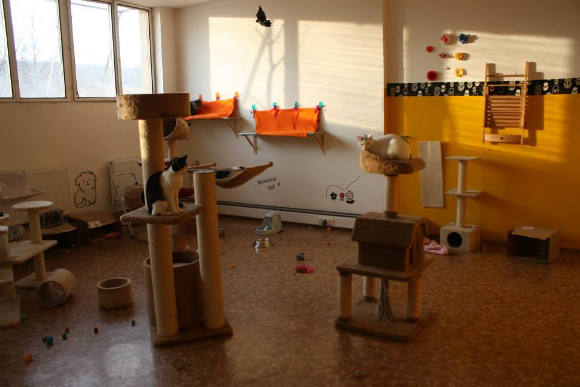

Náš příběh
Kočičí útulek MňauDomov vznikl před několika lety jako malý projekt lidí, kteří chtěli pomáhat opuštěným zvířatům. Postupem času se útulek rozšířil a stal se místem, kde dostávají šanci kočky z celé republiky. Zpočátku jsme měli jen několik míst, ale díky dobrovolníkům se nám podařilo vybudovat plně funkční zázemí. Naším hlavním cílem je zajistit kočkám bezpečné prostředí a kvalitní péči. Každý den pracujeme na tom, aby naše služby byly stále lepší.
Náš tým tvoří dobrovolníci, veterináři a další lidé, kteří věnují svůj čas i energii kočičím životům. Věříme, že spoluprací a ochotou dokážeme měnit svět koček k lepšímu. Snažíme se také spolupracovat s dalšími útulky, aby se co nejvíce zvířat dostalo do adopce. Pravidelně pořádáme osvětové akce, které mají upozornit na problematiku opuštěných koček. MňauDomov není jen útulek, ale také komunita lidí, kteří chtějí dělat svět o něco lepším místem.
V našem útulku se snažíme zajistit, aby každá kočka měla pohodlné místo k odpočinku, dostatek krmení a čisté prostředí. Dbáme na jejich zdraví a psychickou pohodu. Vytváříme také herní zóny a bezpečné kouty, kde si kočky mohou hrát a odpočívat. Každý člen týmu se stará o kočky s láskou a péčí, aby se cítily šťastně a bezpečně.
Útulek je otevřený pro veřejnost, školní skupiny i jednotlivce, kteří chtějí poznat kočky a dozvědět se, jak se o ně správně starat. Pořádáme také besedy a workshopy o zodpovědném chovu zvířat a adopci. Naši dobrovolníci jsou vždy připraveni poradit a zodpovědět vaše otázky. Každá návštěva je pro kočky příležitostí k socializaci a interakci s lidmi. Díky podpoře veřejnosti můžeme zajistit, že kočky mají lepší život a šanci najít nový domov.